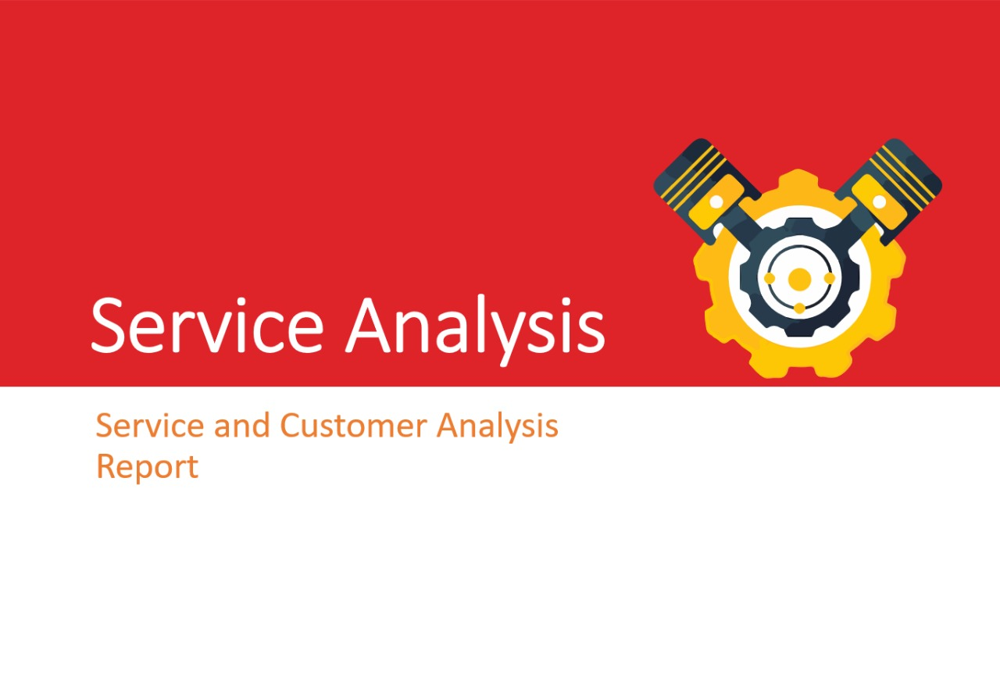

 Github
Github.png) Linkedin
LinkedinAbout the Project
Used Python (Pandas, Matplotlib) to analyze inventory and mechanic performance data for a bike servicing
company. Prioritized inventory based on demand trends and evaluated mechanic performance to enhance
operational efficiency
Skills: PowerBi, Excel, SQL
Approach And Insights
- Analyzed customer and payment data to identify top spenders using statistical methods.
- Recognized spending trends to highlight valuable customers for business focus.
ğ‡ğ¢ğ ğ¡-𝐕𝐚𝐥𝐮𝐞 ğ‚ğ®ğ¬ğğ¨ğ¦ğğ«ğ¬:
- Analyzed historical data on parts used during servicing to predict future demand.
- Aimed to reduce inventory rotation time, ensuring parts don’t sit in stock too long.
ğğ«ğğğ¢ğœğğ¢ğ§ğ ğğšğ«ğğ¬ ğ”ğ¬ğšğ ğ:
- Adjusted inventory levels based on demand predictions, optimizing stock management.
- Reduced the duration parts remain in inventory by over 5 days.
ğˆğ§ğ¯ğğ§ğğ¨ğ«ğ² ğŒğšğ§ğšğ ğğ¦ğğ§ğ:
ğ‘ğğ¬ğ®ğ¥ğğ¬
- Identified high-value customers and optimized inventory, leading to more efficient stock management and improved overall business operations .
- Developed strategies to target high-value customers for service plans, such as offering multi-servicing cards, which lowered the overall servicing price and increased customer retention.
- • Leveraged data on the most frequently used parts to make bulk purchases, securing discounts and optimizing future inventory procurement.